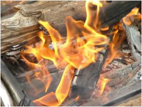

| e-Induction Fire Awareness |
 |
To look at each in turn:
Typical sources of heat (or ignition)
 Naked flames
Naked flames
 Hot surfaces
Hot surfaces  Electrically generated sparks
Electrically generated sparks
Common fuels include:
-  Wood, paper and card
 Paints and varnishes, plastics and rubber
Paints and varnishes, plastics and rubber
Sources of oxygen:
- Air
- Doors and windows
- Air conditioning

Thus common fire hazards will include:
- Electric wiring in poor condition
- Accumulation of combustible materials (paper, folders etc)
- Electrical equipment left switched on
- Excessive use of electrical extension sockets and unmanaged cables(never interlink)
- Careless disposal of cigarettes
- Obstruction of heaters’ ventilation
- Excessive use of multi point adapters
- Use of cable reel extensions especially if left wound up or coiled
- Blocked escape routes
- Fire doors wedged open
- Arson (accounts for 30%-40% of all fires in the UK)
Look around your office and see if you can see evidence of any of these – if so resolve it out if you can and/or report it to your manager
More details of other sources and hazards, as well as information on fire doors, emergency lighting and signs and notices can be found at: http://staffnet.gloscc.gov.uk/fireprocedure
To go back use the left arrow link. For
the next page use the right arrow link
|
||
Downloads for Assembly points and firewardens for Shire Hall More details on basic emergency procedures
|